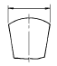
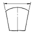
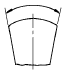
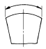

금속재료시험기능사 (2004-02-01 기출문제)
1과목: 금속재료일반
1. 전기구리를 용융제련하여 구리 중의 산소를 0.02 - 0.04% 정도 남긴 구리는?
- 정련구리
- 탈탄구리
- 합금구리
- 경화구리
(정답률: 59%)

2. 상온에서 액체인 수은이 고체로 되는 온도는?
- -48.87℃
- -38.87℃
- -28.87℃
- -18.87℃
(정답률: 69%)
3. α 철의 자기변태이며 순철은 냉각시 이점을 경계로 하여 상자성체로 부터 강자성체로 변화하는 변태는?
- A0변태
- A2변태
- A3변태
- A4변태
(정답률: 74%)
4. 소성변형 후의 위치가 어떠한 면을 경계로 하여 대칭이 되는 것과 같은 변형을 했을 때를 무엇이라 하는가?
- 쌍정
- 전주
- 전단
- 탄성
(정답률: 82%)
5. 금속의 가용성을 이용하여 2개의 금속을 반 영구적으로 접합하는 방법은?
- 용접
- 단조
- 전조
- 압연
(정답률: 87%)
6. 자연 중에 존재하는 원소 중 불활성가스는?
- Hg, Fe
- Mg, Sn
- He, Ar
- Pt, N
(정답률: 81%)
7. Fe3C 에서 탄소 함유량(%)은?
- 0.02
- 3.50
- 6.67
- 9.93
(정답률: 78%)
8. 경합금에 속하지 않는 것은?
- 티탄합금
- 주철합금
- 알루미늄합금
- 마그네슘합금
(정답률: 46%)
9. 오스테나이트계 18-8 스테인리스강의 주 특수원소는?
- Si - Mn
- Mo - Mn
- Cr - Ni
- Si - W
(정답률: 88%)
10. 철강의 시멘타이트를 옳게 표현한 것은?
- Fe3C
- FeH2
- Fe2O3
- FeCN
(정답률: 80%)
11. Pt-Rh 합금의 주성분은?
- 인 - 팔라듐
- 백금 - 로듐
- 이리듐 - 토륨
- 몰리브덴 - 탄탈
(정답률: 85%)
12. 양은(german silver)의 주 성분은?
- 규소 - 주석 - 은
- 백금 - 주석 - 납
- 탄탈 - 망간 - 금
- 구리 - 아연 - 니켈
(정답률: 56%)
13. 동일 조건에서 전기전도도가 가장 큰 것은?
- 인
- 황
- 은
- 납
(정답률: 85%)
14. 상온에서 구리의 비중은?
- 약 8.9
- 약 7.8
- 약 4.5
- 약 2.7
(정답률: 53%)
15. 중(重)금속이 아닌 것은?
- Fe
- Pt
- Mg
- Mo
(정답률: 57%)
16. 한국산업규격의 금속 부문 기호는?
- KSA
- KSB
- KSC
- KSD
(정답률: 79%)
17. 도면의 표제란에 기입된 "NS"가 뜻하는 것은?
- 국제표준규격으로 도시된 도면
- 영구 보존할 도면
- 가공여유 또는 수축여유를 고려하여 도시된 도면
- 척도를 맞추지 않고 그려진 도면
(정답률: 81%)
18. 제도에서 물체 형상의 일부분을 생략하여 자르는 경우나 부분 단면의 경계를 나타내는 선은?
- 외형선
- 파단선
- 가상선
- 절단선
(정답률: 76%)
19. 원호의 길이를 나타내는 치수선은?




(정답률: 51%)
20. 단면도형에서 물체의 면이 단면임을 나타낼 때 사용되는 선은?
- 해칭선
- 절단선
- 가상선
- 지시선
(정답률: 70%)
2과목: 금속제도
21. 도면에 기입된 C3 의 C 는 무엇을 뜻하는가?
- 45° 모떼기
- 정사각형
- 반지름
- 지름
(정답률: 92%)
22. 구멍의 종류 중 기준이 되는 구멍으로 최소허용치수가 기준치수와 일치하는 구멍의 종류 기호는?
- A
- H
- P
- O
(정답률: 59%)
23. 구멍치수 ø50±0.025 에서 공차는?
- 0.025
- -0.025
- 0.⑤0
- 0
(정답률: 65%)
24. 일반구조용 압연강재의 기호 SS 330 에서 330 의 단위는?
- N/cm2
- kg/mm2
- kg/cm2
- N/mm2
(정답률: 36%)
25. 나사 제도에서 숫나사의 바깥지름 및 암나사의 안지름은 어떤 선으로 도시하는가? (단, 나사부는 눈에 보이는 경우임.)
- 굵은 실선
- 가는 실선
- 굵은 파선
- 가는 파선
(정답률: 54%)
26. 부품을 제작할 수 있도록 각 부품의 형상, 치수, 다듬질 상태 등 모든 정보를 기록한 도면은?
- 조립도
- 배치도
- 부품도
- 견적도
(정답률: 61%)
27. 기계제도나 금속제도에서 원칙적으로 사용하는 투상법은?
- 등각투상도법
- 정투상도법의 제3각법
- 정투상도법의 제1각법
- 사투상도법
(정답률: 82%)
28. 유효침탄 깊이를 측정하는 것은?
- 비커즈경도기
- 만능인장기
- 비틀림시험기
- 쇼어경도기
(정답률: 69%)
29. 강의 페라이트 결정 입도시험에서 절단법에 속하지 않는 것은?
- 피클링법
- 중량법
- 점산법
- 광전관법
(정답률: 30%)
30. 강의 담금질 조직과 관련이 가장 적은 것은?
- 트루스타이트
- 솔바이트
- 레데뷰라이트
- 오스테나이트
(정답률: 37%)
31. 고온 금속현미경의 장치가 아닌 것은?
- 금속 현미경
- 시료 가열장치
- 진공장치
- 냉각장치
(정답률: 64%)
32. 담금질한 강을 재가열 했을 때의 조직 변화 순서는?
- 솔바이트 → 펄라이트 → 마텐자이트 → 투루스타이트
- 마텐자이트 → 투루스타이트 → 솔바이트 → 펄라이트
- 펄라이트 → 솔바이트 → 마텐자이트 → 투루스타이트
- 투루스타이트 → 펄라이트 → 솔바이트 → 마텐자이트
(정답률: 53%)
33. 기계구조용 탄소강이나 구조용 합금강의 열처리 입도시험을 할 때 가장 적당한 방법은?
- 침탄법
- 2중 침탄법
- 황산법
- 산화법
(정답률: 25%)
34. 강을 고용체 범위까지 가열 후 급랭시켜 고용체의 상태를 상온까지 유지하는 처리는?
- 침탄처리
- 탈가스처리
- 화염경화처리
- 용체화처리
(정답률: 68%)
35. 황동의 현미경 조직 시험편의 연마에 가장 좋은 연마제는?
- 산화 알루미늄
- 산화철
- 산화크롬
- 산화구리
(정답률: 44%)
36. 현미경으로 조직을 관찰할 때 가장 미세한 조직은?
- 오스테나이트
- 페라이트
- 솔바이트
- 마텐자이트
(정답률: 25%)
37. 강의 설퍼프린트 시험에 사용되는 수용액은?
- NaOH
- Fe2O3
- H2SO4
- CaCO3
(정답률: 66%)
38. 재료의 연성을 알기위한 시험은?
- 크리프시험
- 커핑시험
- 마르텐스시험
- 마이어시험
(정답률: 54%)
39. 시편의 직경 14mm, 평행부 60mm, 표점거리 50mm, 파단 후 길이 60mm, 최대하중 9930kgf일 때 연신율(%)은?
- 16
- 20
- 28
- 40
(정답률: 52%)
40. 재료에 파괴하중보다 작은 힘을 가하여 변형량을 측정하는 시험은?
- 크리프시험
- 마멸시험
- 압축시험
- 굽힘시험
(정답률: 44%)
3과목: 금속재료조직 및 비파괴시험
41. 피로시험의 S-N 곡선과 피로한도에서 약 몇 사이클의 반복에 상당하는 응력값을 피로한도라 하는가?
- 10-2
- 10-4
- 102
- 108
(정답률: 50%)
42. 축에 링을 가열하여 억지 끼워 맞춤하였을 때 각각 어떤 응력이 생기는가?
- 축 → 압축 응력, 링 → 인장 응력
- 축 → 인장 응력, 링 → 압축 응력
- 축 → 인장 응력, 링 → 전단 응력
- 축 → 압축 응력, 링 → 비틀림 응력
(정답률: 45%)
43. 쇼어경도계의 특징이 아닌 것은?
- 시험기에 경사가 진다면 관사이의 마찰로 정확한 경도값을 얻을 수 없다.
- 시험편이 얇은것 또는 작은것도 측정이 가능하다.
- 재료나 제품에 직접 시험을 하기는 곤란하다.
- 운반이 용이하고 시험을 간단히 할 수 있다.
(정답률: 62%)
44. 비커즈 경도계의 특징 중 틀린 것은?
- 하중을 임의로 변화시킬 수 있다.
- 얇은재료의 경도인 침탄층의 경도도 측정할 수 있다.
- 단단한 재료는 측정이 가능하나 연한 재료의 측정은 불가능하다.
- 압입자는 꼭지 대면각이 136° 되는 사각뿔인 다이아먼드로 되어 있다.
(정답률: 54%)
45. 로크웰 경도시험 C스케일의 표시로 맞는 것은?
- HSC
- HCC
- HRC
- HBC
(정답률: 70%)
46. 약 19mm 높이에서 하중이 낙하되는 지시형 경도계는?
- A형 브리넬 경도계
- B형 로크웰 경도계
- C형 비커즈 경도계
- D형 쇼어 경도계
(정답률: 57%)
47. 강의 T 용접 시험편의 내부 결함 탐상은 어느 방법으로 하는 것이 좋은가?
- 후유화성 침투
- 매크로
- 방사선 투과
- 염색 침투
(정답률: 56%)
48. 고온, 고압용 용접부품(보일러 드럼 등)등에 대한 비파괴검사법으로 가장 좋은 것은?
- 현미경 검사
- X-선 투과검사
- 불꽃검사
- 매크로검사
(정답률: 74%)
49. 초음파 탐상검사에 사용되는 것과 관련이 없는 것은?
- 표준시험편
- 접촉매질
- 탐촉자
- 나이탈 부식액
(정답률: 65%)
50. 에코우를 사용하여 결함을 탐상하는 시험법은?
- 침투탐상
- 후유화성 형광탐상
- 응력탐상
- 초음파탐상
(정답률: 79%)
51. 자분 탐상할 때 가장 먼저 고려해야 할 사항은?
- 검사품의 비중과 탄소 함유량
- 탈자 시간과 전압의 세기
- 대비 시험편 및 초음파 선정
- 자화전류의 세기와 자장의 방향
(정답률: 52%)
52. 기름이 새어 나오는 상태로 결함의 깊이 및 크기를 추정 할 수 있는 시험방법은?
- 누출시험
- 초음파 검사법
- X선 검사법
- 감마선 검사법
(정답률: 63%)
53. 침투탐상시험의 표기 약호로 맞는 것은?
- MT
- PT
- AE
- CE
(정답률: 57%)
54. 매크로 시험에 대한 설명 중 틀린 것은?
- 비파괴 시험의 일종이다.
- 확대경을 사용하거나 육안으로 검사한다.
- 표면을 부식시켜 파면검사를 할 수 있다.
- 조직의 균일성 등을 검사할 수 있다.
(정답률: 43%)
55. 압력이 갑자기 발생하거나 개방으로 폭음을 일으키면서 팽창하여 일어나는 경우는?
- 충돌
- 폭발
- 낙하
- 도괴
(정답률: 74%)
56. 산란방사선의 정도를 약화시키는 방지대책이 아닌 것은?
- 후방 스크린 사용
- 마스크의 사용
- 필터 및 조리개 사용
- 필름 후면의 구리 사용
(정답률: 42%)
57. 도수율을 나타나는 공식으로 옳은 것은?
- (재해자수/평균근로자수)× 1000
- (연근로시간수/재해발생건수)× 1000
- (근로손실일수/연근로시간수)× 1000
- (산업재해건수/연근로시간수)× 1000000
(정답률: 44%)
58. 금속재료시험의 주의사항 중 틀린 것은?
- 시험 전 취급설명서를 숙지한다.
- 자주 정밀도에 관해 확인한다.
- 장비와 친숙하기 위해 스위치를 자주 눌러 본다.
- 안전장구를 착용하고 시험에 임한다.
(정답률: 75%)
59. 브리넬 경도기 사용법 중 틀린 것은?
- 시험기는 충분한 안정성이 있고 견고한 기초대에 설치해야 한다.
- 시험기를 분해하였을 때에는 재차 정밀도에 관하여 검사 후 사용한다.
- 압입자는 기름종이에 싸서 보관한다.
- 시험편의 두께는 압흔 깊이의 5배 미만이어야 한다.
(정답률: 63%)
60. 충격시험에서 샤르피 흡수 에너지를 노치(Notch) 부분의 원단면적으로 나눈 값은?
- 해머의 질량
- 효율에너지
- 충격값
- 시험편 파괴값
(정답률: 49%)